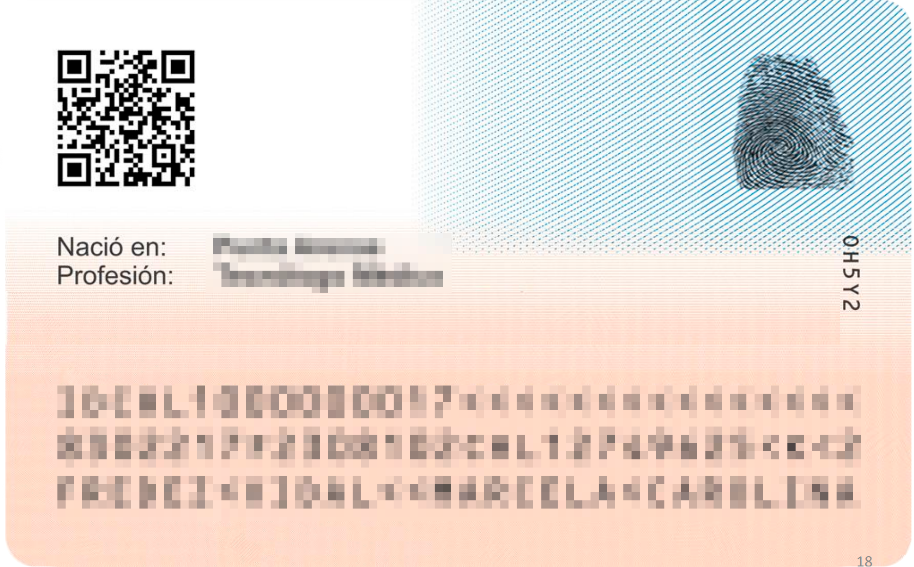
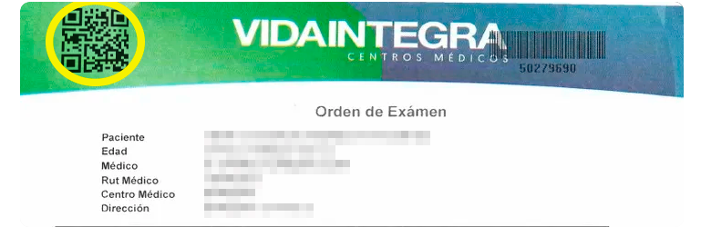

Bienvenido a tu registro médico
Aquí podrás encontrar todo tu registro médico. Sube tus recetas médicas y exámenes. Es fácil y rápido.
Si eres especialista podrás acceder al historial médico de tu paciente y actualizar su ficha médica.

¡Recuerda tu cédula de identidad!
Lleva siempre contigo tu cédula en tus próximas visitas médicas.
De esta forma tendrás la oportunidad de mantener tu expediente médico al día.
¡No te olvides de tu QR!
Puedes escanear el codigo QR de tu receta médica o exámen para actualizar tu historial.
